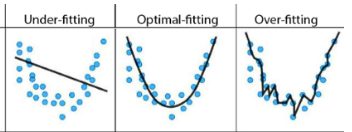

What is regression?
What is regression?
Regression is a technique to model the relationship between a feature (independent variables) and a prediction (dependent variables). It helps us understand how the value of a dependent variable is changing based on the value of the independent variable. When applied properly it helps us predict values 😯!
 |
|---|
| Regression |
Regression is a powerful technique that lets us find a line or a curve that fits the data we have. By doing regression, we can create or reuse mathematical models that show how the dependent and independent variables are related. Mathematical models
are useful because they help us understand a system and make predictions based on the system’s variables. Sometimes, the mathematical model we choose may not match the data well, so we have to look for a better model that can capture the patterns we see.
Example 1: How do we know if it is going to rain?
Whenever you use your phone, watch a news cast, or just ask in the internet “What is the chance of rain today?”, mathematical models are used by meteorologists to predict if there will be the possibility of rain. You may wonder, What variables are taken into consideration when running those mathematical models? Is the smell of rain enough?
Exercise 1
Suppose that someone wants to know the type of shapes they have based on the area of the shape.
- Is that even possible? Can someone know what shape they have based on the area?
- If the area is not a good variable or property to understand the type of shape we can have. We need to come up What relationship can we use in order to know what is the type of shape?
A model, in the case of our previous example, is just a function that is built to establish a relationship between our dependent variable and independent variables. For example, functions such as lines (y = ax + b), parabolas (y = a(x -h)^2), cubic curves, (y=ax^3+bx^2+cx+d), and many more can be used as models.
How to make sure your model fits the data?
When we perform analysis using a machine learning model that already exists we need to ensure that we select the appropriate model and that somewhat represents our data. On the image below you can see that the data points represent a parabola. It is very likely that the model we need to use is a parabolic model something like this…
\[ y = a(x -h)^2 \]
When you use a parabolic model you need to know where the vertices of the parabola will land in order to predict where a new point will be. You could go ahead and run a model, setting no vertices and end up like the “Under-fitting” image, or setup way to many vertices and end up like the “Over-fitting” image. We want to set it just right enough so that our model “fits” the data and new data points can be represented using the model.
|  |
|---|
| Image 1: Under-Fitting and Over-Fitting |
You always need to make sure that the model you choose to represent your data fits what you are working on. Otherwise, you might have one of two issues:
-
Under-Fitting
This happens when you are unable to find a relationship in the data you have been given. This often happens when there is not much data to use.
-
Over-Fitting
When you are trying to accommodate every possible value in your data, even the ones that don’t represent anything. By doing this you might be choosing values that are outliers and do not represent the reality of things. For example, having a shape that has 1 or 2 lines doesn’t make sense.